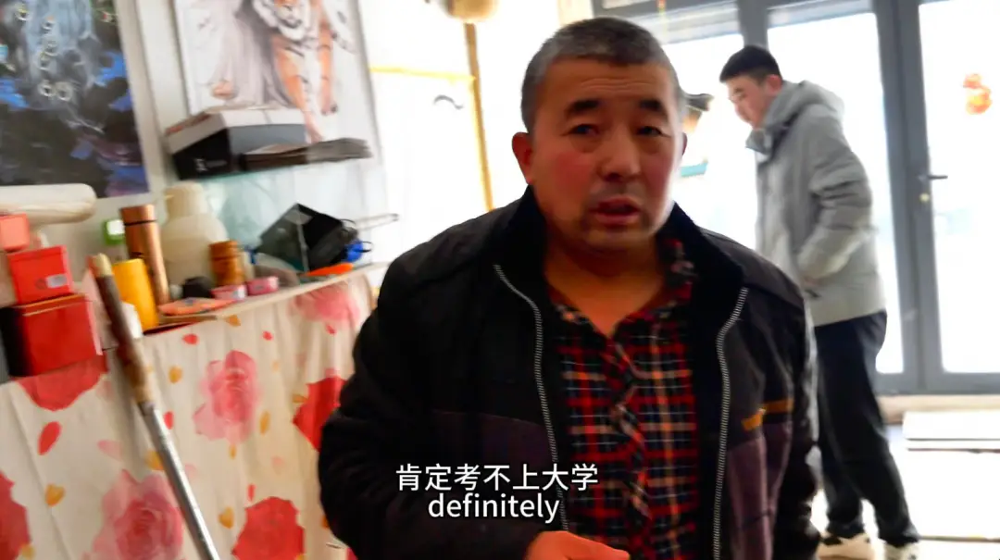
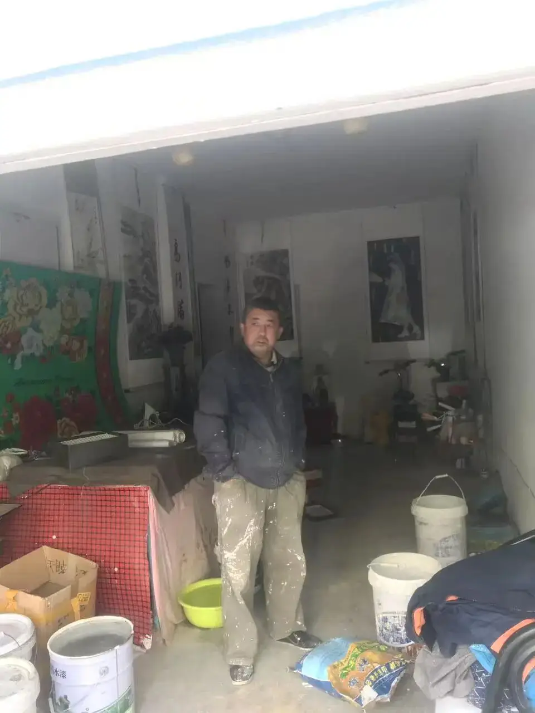
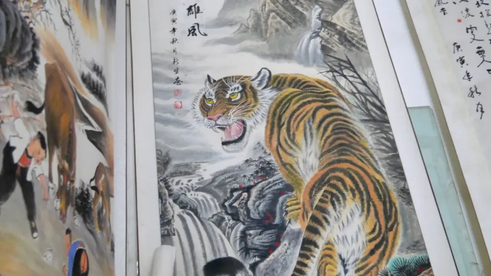
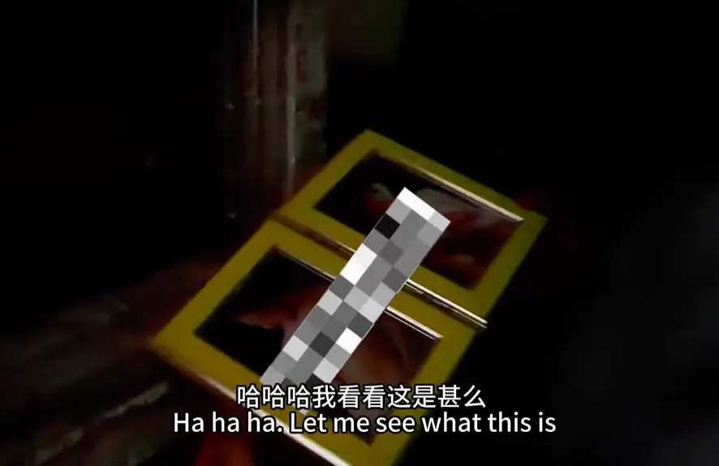

《神池李白18时》。
不知道其他人是什么感受，但至少对我们家年轻一代有相当的触动。

上面这张截图的背景里，是李白的儿子。
在屏幕上，看着自己父亲的故事，那种感受肯定是特别的。
这篇内容，便是他留在B站上的感受和角度。
我以前没怎么看到过弟弟的文字。
不过从这篇文章来看，这位李白二代，潜力还是很大的。
这里分享给大家。

（以下为弟弟的原文）
主页刷到，完整的看完了，一开始觉得看不进去，但是越看越有意思。
四十分钟，仿佛我也掉入了李白的世界。
李白名流千古，而视频中的李白却只是一个再平凡不过的中年人。

一个挣扎在社会底层的劳动人民。
一个向往于对美好生活并为之努力半生至今的平凡人。
家宴上李白的豪言壮语，家人的似乎不理解的欢笑声。

但李白仍用自己的方式表达着对过去追念、对家人关爱、对自己未来的展望。
追念自己过去因为偏科没有参加中考，反而在考试那天喝的酩酊大醉。

关爱自己的老婆孩子，对自己儿子表示打光棍的不理解。
如梦如醒的未来，因为一百年太完美，反而要活到九十八的目标。
他认为自己是李白转世，但却又矢口否认。
当然，他确实不是李白，他连李白的一首静夜思都无法完整背出。
但他继承了李白的酒，李白的浪漫，李白的豪言壮语。
他就是李白。
车库杂乱无章，足够寒窑二字。
两只松鼠放在门口，李白说自己是一个木纳内向的人，所以喜欢活泼的动物。
摆在两边墙上的画作，寄托着李白渴求与渴望，但渴望而又得不到的未来。
“我的老虎在哪里？”李白这样问道。

看到这里，我早已没有了一开始觉得看乐子的心情。
李白的老虎在墙上，在他心里，而我的老虎在哪里？
似花还似非花，也无人惜从教坠。
李白埋没于时代，但依然跟赶着时代。

“中途精彩，过程精彩，然后突然死去”，这是李白对这个时代的见解。
但仔细想来又何尝不是。
充斥于各大app的短视频短剧，一夜成百上千的播放量。
而李白的故事，又有多少人会坚持看下来呢？
不负众望，第二代传人找到了李白风流的过往，我本以为又有乐子要看。

但是李白又在精神高低上再次将我击败。
一件死物，一句吞噬，我却早已折服于李白的文采。

除夕夜，李白酒醒，在大家团圆之际上街捡起了纸片子贴补家用。

看到这里，我已了然，这个人的确不是李白，他已经超越了李白。
结尾总想说些什么，却总是打出删掉。
还是有一句话要说的： 第二代传人，找个对象罢！
其他播放平台
▼

△快手
△抖音
△B站
长按保存到相册，然后扫码跳转
-END-
推荐阅读
▼
（点击文字即可获取全文）
神池李白18时
神池李白 | 我是黑夜中永不停歇的火焰
这里没有挑逗你眼目情欲的小鲜肉
也没有挑动你肉体情欲的段子
更没有膨胀你今生骄傲的鸡血
我们只在乎那些最质朴真诚的作品
在那里我们才能恢复真正的想象力
我们也坚信这才是我们真正需要的

ID:Six_hundred_hits
长按二维码，一键关注
【六百击】
-END-
电影评论
尽情分享朋友圈